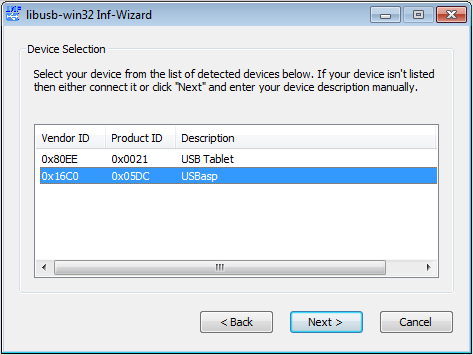
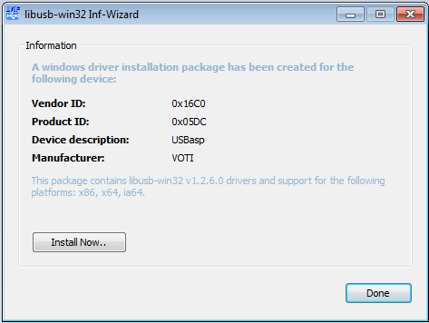
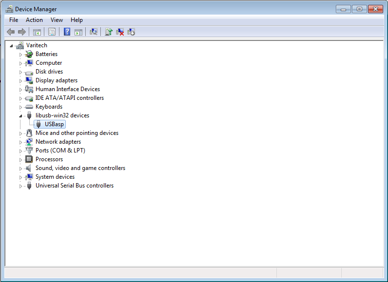

Open the folder win7 and then the bin folder inside that, and run the inf-wizard.exe program:

With the robot connected, press the Next button and then select the device that says USBasp in its Description field:

Press Next again twice and the wizard will ask you to save the automatically generated .inf file. Save it anywhere on your computer and press the Install Now... button:

The drivers should now be installed.
At any time, you can check to be sure that your robot is recognized by the operating system by going to Control Panel->System and from there to the Device Manager (on the upper left corner of the screen). Under the libusb-win32 devices category, you should see the USBasp entry, without any exclamation mark or yellow warning sign:
